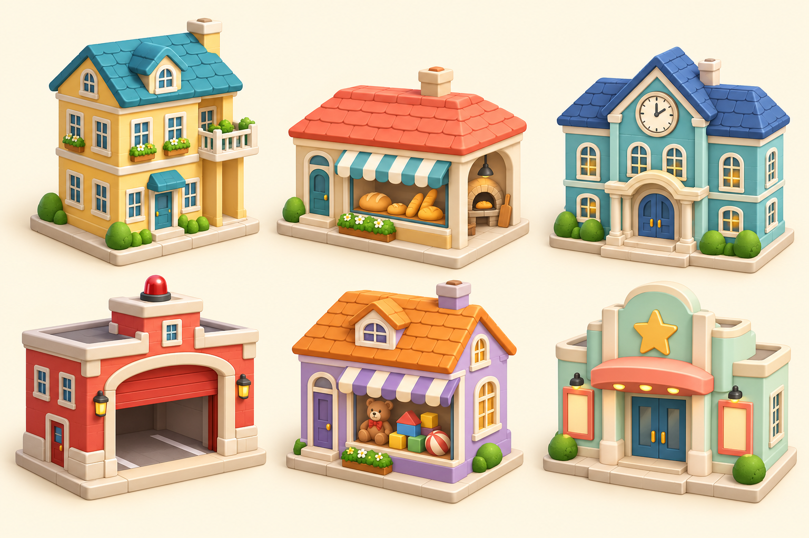
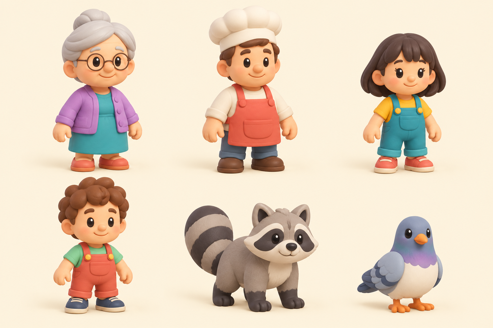

Город · визуальные концепты
Мягкие игрушечные формы, спокойная палитра, узнаваемые силуэты. Это листы для согласования стиля, а не готовые модели.
Постройки

Сверху: дом бабушки · пекарня · школа. Снизу: пожарная часть · магазин игрушек · клуб.Персонажи

Кошка, деревья и электрические детали уже есть в игре. Детям и еноту нужна настоящая походка.Tripo на этом этапе не использован. Перечень повторно используемых моделей и предварительный бюджет — в README.md.